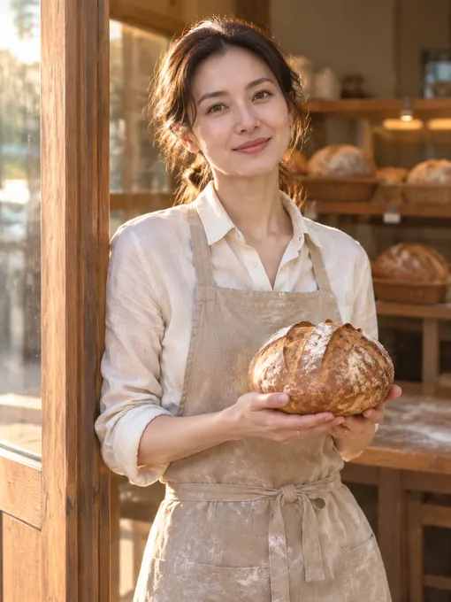

liyue-aigc/female-portrait-director: image test, 2026-11-08
The same brief for every skill: a 3:4 poster for a made-up bakery with six exact lines of English and Chinese text, a square photo of a kraft-paper bag printed with the shop's name, and four square pictures of one mascot in four poses. Claude Code (Claude Opus 5.5) made them with the skill in a throwaway sandbox; every image call went to the newest model of the family the skill asked for (GPT Image 2.6, Nano Banana 2.1 or FLUX 3). 1.9 minutes; 1 image calls ($0.009), drawn by gpt-image-2.6-ext. All results · The brief · How it is scored
Draws portraits of women only, so it got a portrait brief instead of the bakery set.
Result
Portrait only
The pictures


How it went (the session's closing message)
I made the portrait and saved it as `~/work/output/portrait.png`. It's 3:4 at 768×1024, smaller than the 1536×2048 I asked the API for. **What it shows:** a woman in her thirties leans on the wooden doorframe of the bakery at sunrise. She's holding a round, floured sourdough loaf in both hands and smiling at the camera. She wears a cream linen shirt and an oatmeal apron with flour on it. Low warm sunlight comes from the side, and behind her are blurred shelves of bread and a floured worktable. Her face, hands and the loaf look right, and there's no text, logo or watermark anywhere in the picture. **How I followed the skill:** - **Style:** I used its "clean lifestyle" style (natural, everyday, like a still from a film), which fits a candid doorway shot best. - **Prompt:** I wrote it the skill's way, in Chinese and in five paragraphs: the person; the moment and pose; clothing and colors; the setting and camera; then light and color grading. The first line sets 3:4 and no text, and the skill's list of things to avoid is added at the end. - **Your details kept:** her age (thirties, which replaces the skill's default of 20–28), the doorway, sunrise, the round sourdough loaf, warm light, 3:4 and no text. - **Skill defaults I took:** where your brief was silent, I used the skill's defaults. That made her East Asian and gave the picture a warm, soft, low-contrast color grade. - **Image call:** OpenAI's image API, called as `gpt-image-1` with high quality. DELIVERABLE: ~/work/output/